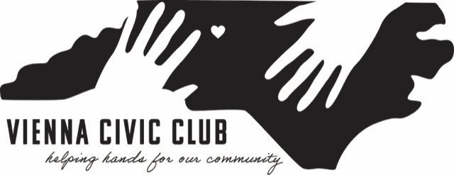

Neighbors working together to strengthen our community through service, leadership, and civic engagement.
Join the ClubThe Vienna Civic Club is a local organization serving the Vienna community in North Carolina. We bring residents together to support neighborhood improvement, public service, local events, and civic pride. Our mission is to promote fellowship among our members, serve the community through the sponsorship of worthwhile projects and to further the American way of life through ethical participation in our community.
Meeting Dates:
September 23, 2026
October 28, 2026
Time: 6:30 PM
Location:
Brookstown UMC Fellowship Hall
6274 Yadkinville Rd
Pfafftown, NC 27040
Date: September 18, 2026
Time: 7:30 PM – 10:30 PM
Location: Shallowford Square
FREE admission! Movie begins at dusk. Bring a lawn chair or blanket to enjoy a great outdoor movie on the big screen.
Concessions will be available for purchase by the Vienna Civic Club.
Date: October 3, 2026
Time: 8:00 AM – 11:00 AM
Location: Brookstown United Methodist Church
Shine up your rides and come show them off. While you are there, enjoy a delicious breakfast biscuit and freshly brewed coffee from Great Wagon Coffee.
Donations are appreciated, and all proceeds will go to our scholarship fund.
Date: October 9, 2026
Time: 7:00 PM – 10:00 PM
Location: Shallowford Square
FREE admission! Movie begins at dusk. Bring a lawn chair or blanket to enjoy a great outdoor movie on the big screen.
Concessions will be available for purchase by the Vienna Civic Club.
Date: November 7, 2026
Time: 11:00 AM until sold out
Location: West Central Community Center
Plates include 1/2 chicken, baked beans, coleslaw, a roll, dessert, and a drink.
Plates are $15, or you can purchase 1/2 chicken only for $10. All proceeds go to our scholarship fund.
Our fundraisers mostly support our scholarship program. In 2025 we gave out $5000 in scholarships. We also support the local Boy Scout and Girl Scout troops and have a general benevolence fund. To keep our area beautiful, we participate in the Adopt a Highway program along Yadkinville Road.
Would you like to get involved and serve your community with a wonderful group of volunteers? The Vienna Civic Club is accepting applications for new members and would be excited to tell you more about the work we do to support the Vienna/Pfafftown area.
We meet monthly from August to May to share a meal, have fellowship and plan our community activities. Members participate in committees for fundraising, scholarships, benevolence, highway pick-up, and special projects.
We hope you will consider visiting a meeting and learning more. ALL ARE WELCOME!!
Annual Dues are $10 per person.
Upcoming meeting dates and location information is located in the Events section.
Become a MemberEmail: viennacivic@gmail.com
Location: Pfafftown, North Carolina
Facebook: Visit the Vienna Civic Club on Facebook